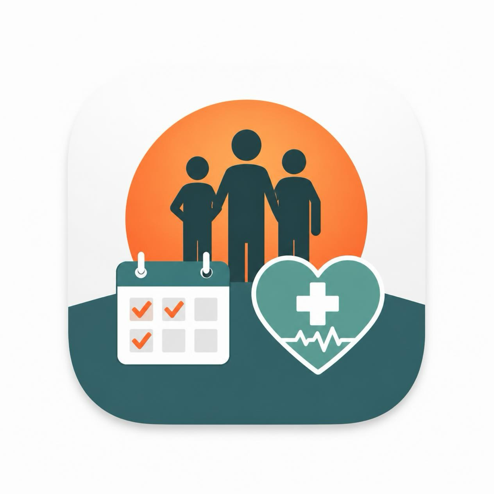

Дневник здоровья
Здоровье всей семьи в одном приложении: болезни, анализы и прививки каждого. Болезни и симптомы, план прививок с напоминаниями, динамика показателей и отчёт в PDF для врача. Без аккаунта и без облака — всё хранится на вашем устройстве.
Android 9.0+ · iOS 16+v1.0.0ОфлайнРусский / English
Скачать
Официальные магазины. Если кнопки нет — публикация в процессе.
RuStore — скоро будет
Google Play — скоро будет
App Store — скоро будет
Технические вопросы — appcreators.technolab@ya.ru
Скриншоты
Нажмите, чтобы открыть и листать стрелками или свайпом.
Возможности
Учёт здоровья семьи без облака, аккаунтов и подписок.
СЕ
Профили семьиИмя, дата рождения, пол. Своя карточка на каждого: мама, папа, дети. Всё, что вы вводите, — только на вашем устройстве.БЗ
Болезни и симптомыНазвание, даты, диагноз, симптомы, температура, лекарства, заметки и фото. Отметка «здоров / болеет» видна сразу на главной.ПР
План прививокКалендарь прививок с планом по каждому ребёнку. Просроченные и запланированные — отдельными списками, с адресом поликлиники и кабинета.АН
Анализы и графикиРезультаты с файлами и фото. Норма задаётся вручную, значения вне интервала подсвечиваются, динамика — на графике за 3 мес / 6 мес / год.СТ
Статистика семьиЧастые заболевания, кто болеет чаще, сезонность по сезонам. Отдельно — сводка по любому члену семьи.PDF
Отчёт для врачаВсе болезни, прививки и анализы за период — в одном PDF-файле. Формируется на устройстве и отправляется через системное меню «Поделиться».НП
НапоминанияЛокальные уведомления о прививках и анализах. Планируются на устройстве, без сервера и без аккаунта.ЗП
Резервная копия ZIPПеренос записей на другой телефон одним файлом. Без копии после сброса или поломки устройства восстановить данные невозможно.БЛ
ПИН и биометрияFace ID / отпечаток для быстрой разблокировки, автоблокировка, скрытие содержимого экрана в переключателе задач.ПО
Поиск и фильтрыПоиск по названию, фильтры по типу записи, по члену семьи и по периоду. Год целиком — на одном экране.ТЕ
Темы и языкиСветлая, тёмная и системная тема. Русский и английский, язык переключается внутри приложения.ПФ
Фото и файлыК каждой записи о болезни или анализу можно приложить фото из камеры или галереи, а также готовые файлы.Как это работает
Три шага от установки до первого отчёта врачу.
Заведите профили
Имя и дата рождения для каждого в семье. Регистрация и аккаунт не нужны.
Имя и дата рождения для каждого в семье. Регистрация и аккаунт не нужны.
Записывайте
Болезни, симптомы, температуру, лекарства, прививки и результаты анализов — по мере того, как они случаются.
Болезни, симптомы, температуру, лекарства, прививки и результаты анализов — по мере того, как они случаются.
Покажите врачу
Соберите отчёт в PDF за нужный период и отправьте его с телефона.
Соберите отчёт в PDF за нужный период и отправьте его с телефона.
Честно о границах: приложение не является медицинским изделием и не ставит диагнозов — вся информация в нём справочная. Внутри есть реклама сторонних рекламных сетей, платной версии и подписки нет. Резервная копия — обычный ZIP-файл, храните его бережно и не отправляйте в общие чаты. Подробности — в политике и условиях.